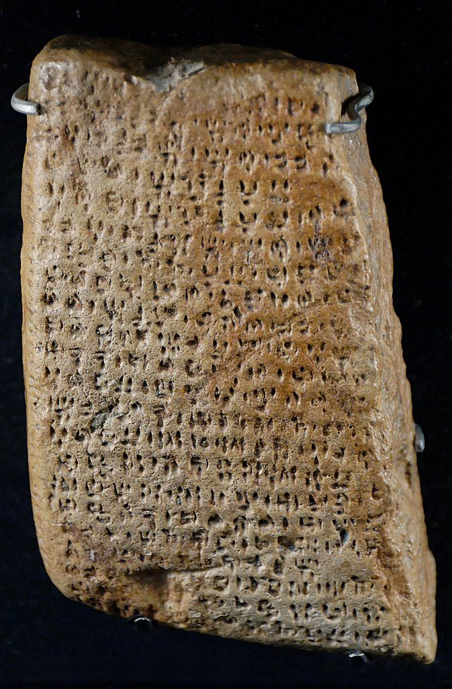

ICPC World Finals 2021 · Problem H
Archaeologists have discovered exciting clay tablets in deep layers of Alutila Cave. Nobody was able to decipher the script on the tablets, except for two symbols that seem to describe nested structures not unlike opening and closing parentheses in LISP. Could it be that humans wrote programs thousands of years ago?
Taken together, the tablets appear to describe a great piece of work – perhaps a program, or an epic, or even tax records! Unsurprisingly, after such a long time, the tablets are in a state of disorder. Your job is to arrange them into a sequence so that the resulting work has a properly nested parenthesis structure. Considering only opening and closing parentheses, a properly nested structure is either
(), or(A), where A is a properly nested structure, orAB, where A and B are properly nested
structures.
The first line of input contains one integer n (1 ≤ n ≤ 106), the number of tablets. Each of the remaining n lines describes a tablet, and contains a non-empty string of opening and closing parentheses; symbols unrelated to the nesting structure are omitted. The strings are numbered from 1 to n in the order that they appear in the input. The input contains at most 107 parentheses.
Output a permutation of the numbers from 1 to n such that concatenating the strings in this order results in a properly nested structure. If this happens for multiple permutations, any one of them will be accepted. If there is no such permutation, output impossible instead.
2 ())())() ((()
2 1
5 ( )) (( )) (
1 5 3 2 4
2 (( )
impossible